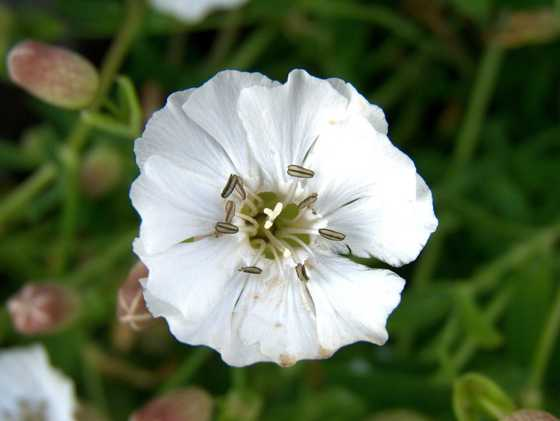
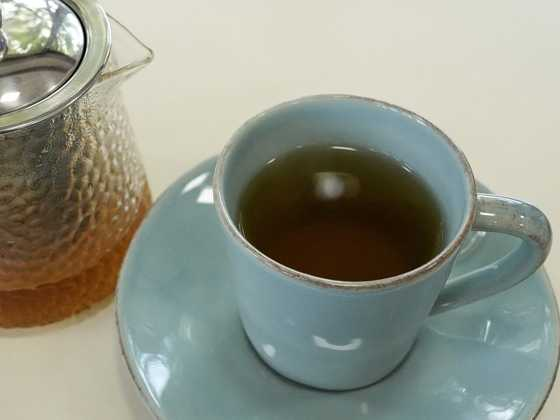
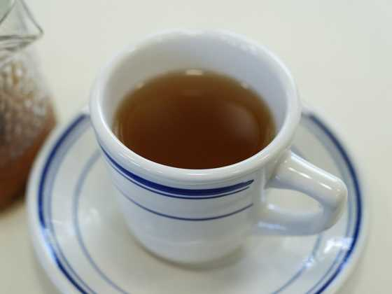
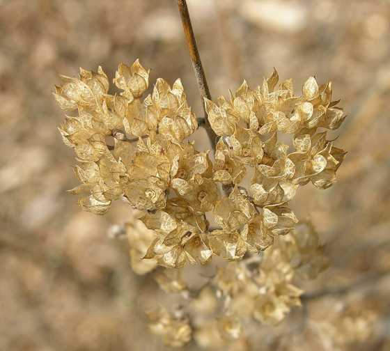
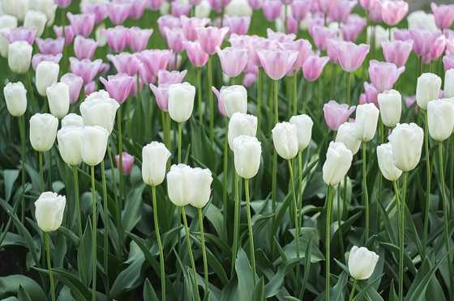
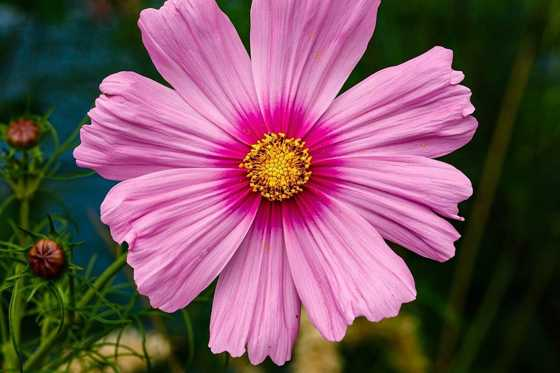
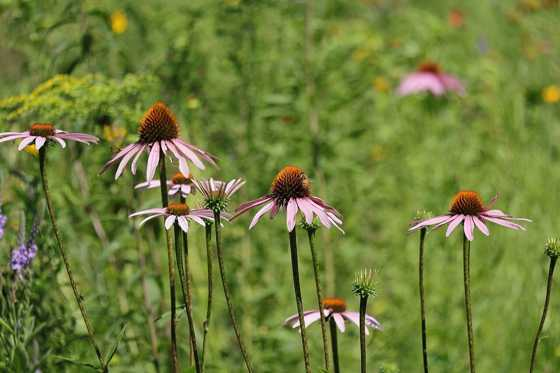
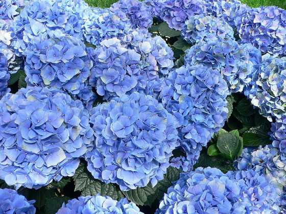
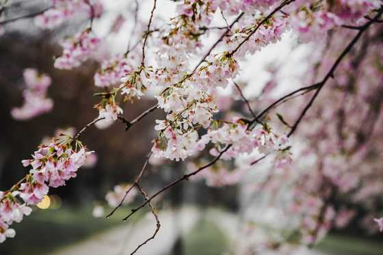

新潟県燕市八王寺・民家を使ったカフェ
実家に帰ったような安らぎを、
苺のように広がる輪とともに。
民家カフェ苺は、そんな想いを店名に込めたお店です。
お店の由来・想い
「苺」という名前に込められたもの
紹介記事によると、店名の「苺」には、実家に帰ってきたような安らぎでお客様を迎えたいという想いと、苺のようにお客様の輪を広げたいという想いが込められているそうです。お店は民家を利用したカフェで、店内は和の雰囲気。テーブル席のほか座敷席があり、手入れの行き届いた庭を眺めながら過ごせると紹介されています。オーナーご夫婦が笑顔で迎えてくれるとも伝えられています。

情報源: ガタチラ(紹介記事)/Instagram
このページの見出しの言い回しや配色は、制作側のイメージです。お店の意向ではありません。
メニュー
食事と、手づくりのおやつ
紹介記事では、次のようなものが取り上げられていました。内容や価格は変わることがあるため、最新の情報は準備中です。




口コミ
お客様の声(イメージ例)
イメージ例
座敷でゆっくりできて、本当に実家に帰ったような気分になりました。
イメージ例
庭を眺めながらいただくお茶とおやつが、心地よい時間でした。
イメージ例
また誰かを誘って来たくなる、あたたかいお店です。
上記は制作側が作成したイメージ例で、実在のお客様の声ではありません。





